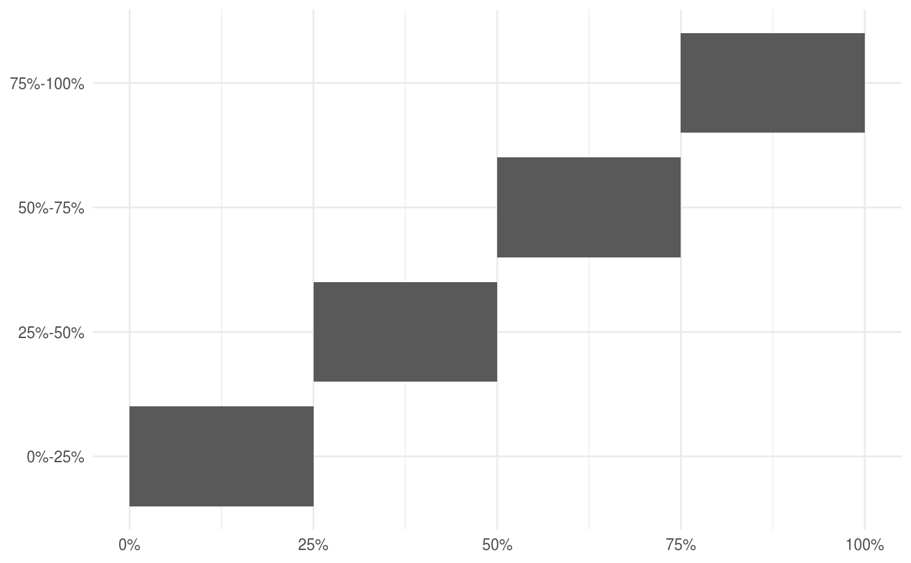

percentify_cut.RdThis function is a small wrapper around percentify. This
function takes a vector of points and creates ranges between those points,
resulting in non-overlapping groups.
percentify_cut(data, var, q = numeric())
| data | A data.frame or tibble, |
|---|---|
| var | Variable to do grouping by as string or symbol. |
| q | Numerical values for cutting points. Must be between 0 and 1. |
percentile grouped tibble
There is a ggplot2::autoplot() to visualize the the percentile ranges.
Other percentile samplers: autoplot.percentiled_df,
percentify_max,
percentify_min,
percentify_random
library(dplyr) library(broom) percent_mtcars <- percentify_cut(mtcars, mpg, c(0.25, 0.5, 0.75)) percent_mtcars#> # A tibble: 32 x 11 #> # Groups: .percentile_mpg [4] #> mpg cyl disp hp drat wt qsec vs am gear carb #> <dbl> <dbl> <dbl> <dbl> <dbl> <dbl> <dbl> <dbl> <dbl> <dbl> <dbl> #> 1 21 6 160 110 3.9 2.62 16.5 0 1 4 4 #> 2 21 6 160 110 3.9 2.88 17.0 0 1 4 4 #> 3 22.8 4 108 93 3.85 2.32 18.6 1 1 4 1 #> 4 21.4 6 258 110 3.08 3.22 19.4 1 0 3 1 #> 5 18.7 8 360 175 3.15 3.44 17.0 0 0 3 2 #> 6 18.1 6 225 105 2.76 3.46 20.2 1 0 3 1 #> 7 14.3 8 360 245 3.21 3.57 15.8 0 0 3 4 #> 8 24.4 4 147. 62 3.69 3.19 20 1 0 4 2 #> 9 22.8 4 141. 95 3.92 3.15 22.9 1 0 4 2 #> 10 19.2 6 168. 123 3.92 3.44 18.3 1 0 4 4 #> # … with 22 more rows#> # A tibble: 4 x 4 #> .percentile_mpg mean_hp mean_wt n_obs #> <chr> <dbl> <dbl> <int> #> 1 0%-25% 226. 4.28 8 #> 2 25%-50% 164. 3.57 9 #> 3 50%-75% 120. 2.95 10 #> 4 75%-100% 78.1 2.21 9#> # A tibble: 10 x 6 #> # Groups: .percentile_mpg [4] #> .percentile_mpg term estimate std.error statistic p.value #> <chr> <chr> <dbl> <dbl> <dbl> <dbl> #> 1 0%-25% (Intercept) 28.0 60.1 0.466 0.658 #> 2 0%-25% wt 80.0 13.8 5.80 0.00115 #> 3 25%-50% (Intercept) -87.0 225. -0.388 0.712 #> 4 25%-50% wt -53.9 65.1 -0.828 0.439 #> 5 25%-50% cyl 76.6 17.5 4.38 0.00466 #> 6 50%-75% (Intercept) -259. 97.3 -2.66 0.0323 #> 7 50%-75% wt 87.8 45.3 1.94 0.0939 #> 8 50%-75% cyl 33.0 15.7 2.11 0.0728 #> 9 75%-100% (Intercept) 12.1 21.7 0.557 0.595 #> 10 75%-100% wt 40.5 9.51 4.26 0.00373#> # A tibble: 32 x 11 #> # Groups: .percentile_mpg [8] #> mpg cyl disp hp drat wt qsec vs am gear carb #> <dbl> <dbl> <dbl> <dbl> <dbl> <dbl> <dbl> <dbl> <dbl> <dbl> <dbl> #> 1 21 6 160 110 3.9 2.62 16.5 0 1 4 4 #> 2 21 6 160 110 3.9 2.88 17.0 0 1 4 4 #> 3 22.8 4 108 93 3.85 2.32 18.6 1 1 4 1 #> 4 21.4 6 258 110 3.08 3.22 19.4 1 0 3 1 #> 5 18.7 8 360 175 3.15 3.44 17.0 0 0 3 2 #> 6 18.1 6 225 105 2.76 3.46 20.2 1 0 3 1 #> 7 14.3 8 360 245 3.21 3.57 15.8 0 0 3 4 #> 8 24.4 4 147. 62 3.69 3.19 20 1 0 4 2 #> 9 22.8 4 141. 95 3.92 3.15 22.9 1 0 4 2 #> 10 19.2 6 168. 123 3.92 3.44 18.3 1 0 4 4 #> # … with 22 more rows